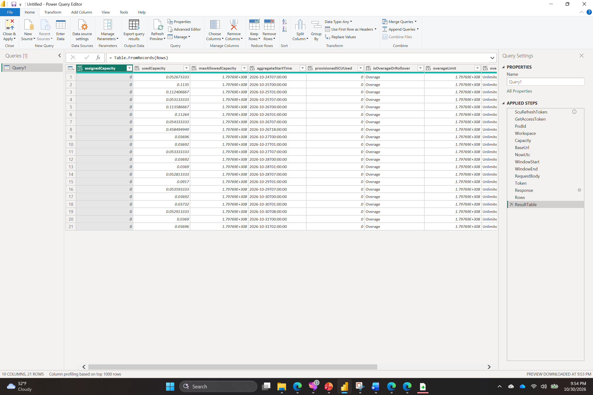

Approach 3 — Native Power Query (M)
No PowerShell, no Logic App, no Power Automate — Power BI's own Refresh button does the whole pull.
Full click-by-click screenshot walkthrough → (20 real screenshots: Blank Query, Advanced Editor, Manage Parameters, live refresh, Close & Apply, a table visual built from the real data, a canvas Refresh, and Save)
Why this is different from the other two
Logic Apps and Power Automate both still need a landing zone (a file, a dataset, a table) that Power BI
then imports separately. Power Query can skip that middle step entirely: a Blank Query's M code calls the
refresh-token exchange and the SCU usage API directly, inside the same engine that already powers
every other query in the report. Opening the .pbit and clicking Refresh is the entire
"automation."
The M code (Blank Query → Advanced Editor)
let
// In production, store this as a Power Query Parameter (Home > Manage Parameters)
// rather than inline - shown inline here to keep the POC self-contained.
ScuRefreshToken = "•••(DPAPI-protected token, same one SCU-Setup.ps1 already obtained)•••",
GetAccessToken = () =>
let
TenantId = "e6cf700c-2029-4e98-aedd-f589e62f7316",
ClientId = "72bb0a2b-c028-4a0f-bb57-78a81db6fc18",
ApiAudience = "73c2949e-da2d-457a-9607-fcc665198967",
TokenEndpoint = "https://login.microsoftonline.com/" & TenantId & "/oauth2/v2.0/token",
FormBody = "grant_type=refresh_token&client_id=" & ClientId & "&refresh_token=" & ScuRefreshToken
& "&scope=" & ApiAudience & "%2FPurview.DelegatedAccess%20offline_access",
Response = Json.Document(Web.Contents(TokenEndpoint, [
Headers = [#"Content-Type"="application/x-www-form-urlencoded"],
Content = Text.ToBinary(FormBody)
])),
AccessToken = Response[access_token]
in
AccessToken,
PodId = "ee221a39-3ce7-48ee-8b63-18bd56c52288", Workspace = "default", Capacity = "SecCo",
BaseUrl = "https://us.api.securityplatform.microsoft.com/pods/" & PodId & "/workspaces/" & Workspace
& "/securitycopilot/usage/" & Capacity,
NowUtc = DateTimeZone.RemoveZone(DateTimeZone.FixedUtcNow()),
WindowStart = DateTime.ToText(NowUtc - #duration(7,0,0,0), "yyyy-MM-ddTHH:mm:ss.fff") & "Z",
WindowEnd = DateTime.ToText(NowUtc, "yyyy-MM-ddTHH:mm:ss.fff") & "Z",
RequestBody = "{""startDate"":""" & WindowStart & """,""endDate"":""" & WindowEnd & """}",
Token = GetAccessToken(),
Response = Json.Document(Web.Contents(BaseUrl & "/aggregates/hourly", [
Headers = [Authorization = "Bearer " & Token, #"Content-Type"="application/json"],
Content = Text.ToBinary(RequestBody)
])),
Rows = Response[value],
ResultTable = Table.FromRecords(Rows)
in
ResultTable
Result — live data, no syntax errors

10 columns, 21 rows — the exact same hourly aggregates the Logic App and Power Automate runs pulled, now coming straight from Power BI's own Refresh, no intermediate file or service.